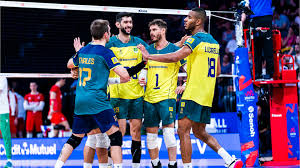

A prática do vôlei é uma ótima forma de exercitar o corpo e a mente. Durante o jogo, os atletas desenvolvem habilidades como coordenação motora, agilidade, trabalho em equipe e concentração. Além disso, o esporte promove a socialização e o espírito de cooperação entre os jogadores. Jogar vôlei regularmente também contribui para a melhora da resistência física e da saúde cardiovascular, tornando-se uma atividade divertida e saudável.
